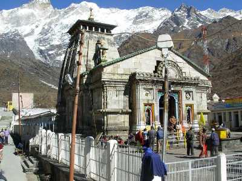
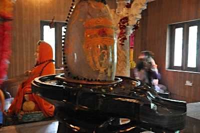
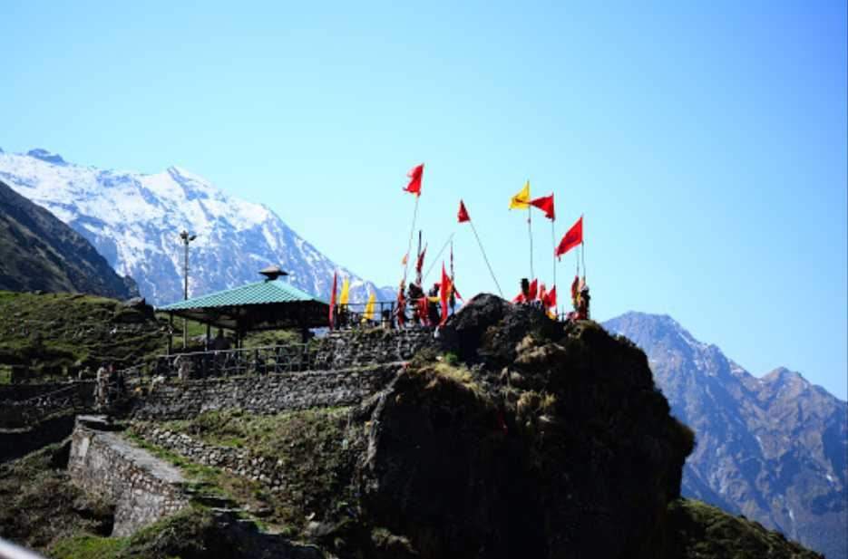

Kedarnath Tourism
Location : UttarKhand-India
Kedarnath is one of the most sacred temples and the holiest Hindu pilgrimages in India.
A part of Chhota Char Dham Yatra in Uttarakhand, Kedarnath is one of the most important among the 12 Jyotirlingas
in India dedicated to Lord Shiva.
Located on the Garhwal Himalayan Range in the Rudraprayag District, Kedarnath Temple can only be reached from Gaurikund
through a trek and remains open only for six months from April to November, due to heavy snowfall in the region during the
rest of the months.
Temple Hours:
The opening time of the temple is 5:00 AM - 9:00 PM and people start to queue up as early as 2 AM.
Temple is closed between 3:00 PM to 5:00 PM.
Best Time: May to June, September to October
Places To Visit In Kedarnath

kedarnath-temple |

Adi Shankaracharya Samadhi |

Shri Bhairavnath Temple |